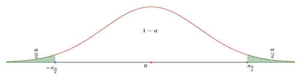
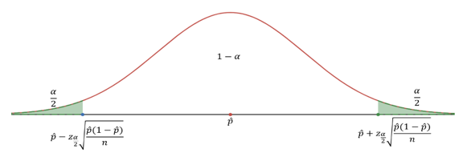

3.2 Confidence Interval
3.2.1 Objectives
- Understand the meaning of sampling distributions.
- Apply the central limit theorem to define the sampling distribution of a sample proportion.
- Identify the conditions needed for the central limit theorem to apply for sample proportions.
- Construct and interpret confidence intervals for the population proportion.
3.2.2 Overview
About critical value \(z^*\) or \(z_{\alpha/2}\): For \(N(0,1)\), \(z_{\alpha/2}\) is the cut-off point with upper tail of probability \(\alpha/2\)

How to find \(z_{\alpha/2}\):
For \(100(1-\alpha)\%\) confidence level, find \(\alpha\) then \(\alpha/2\)
Use R: \(qnorm\left(\frac{\alpha}{2}, \text{lower.tail} = \text{FALSE}\right)\) or \(qnorm\left(1 - \frac{\alpha}{2}\right)\)
Common \(z_{\alpha/2}\) values:
| Confidence level | \(\alpha\) | \(z_{\alpha/2}\) |
|---|---|---|
| 90% | 0.10 | \(z_{0.05} = 1.644854 \approx 1.645\) |
| 95% | 0.05 | \(z_{0.025} = 1.959964 \approx 1.96\) |
| 98% | 0.02 | \(z_{0.01} = 2.326348 \approx 2.326\) |
| 99% | 0.01 | \(z_{0.005} = 2.575829 \approx 2.576\) |
Construct \(100(1-\alpha)\%\) confidence interval: Use \(\hat{p}\), \(n\), and \(z_{\alpha/2}\)
\(\hat{p} \pm z_{\alpha/2} \times \sqrt{\frac{\hat{p}(1-\hat{p})}{n}}\) (or \((\hat{p} - z_{\alpha/2} \times \sqrt{\frac{\hat{p}(1-\hat{p})}{n}}, \hat{p} + z_{\alpha/2} \times \sqrt{\frac{\hat{p}(1-\hat{p})}{n}})\))

Margin of Error (M.E.)
\(M.E. = z_{\alpha/2} \times \sqrt{\frac{\hat{p}(1-\hat{p})}{n}}\)
So, C.I.: point estimate \(\pm M.E.\)
Note: the point estimate is the middle point; the \(M.E.\) = half of the length of C.I.)
Interpretation of C.I.:
With the confidence level of \(100(1-\alpha)\%\) and a sample proportion \(\hat{p}\) with sample size \(n\), we are \(100(1-\alpha)\%\) confident that the population proportion \(p\) is in the confidence interval \((\hat{p} - z_{\alpha/2} \times \sqrt{\frac{\hat{p}(1-\hat{p})}{n}}, \hat{p} + z_{\alpha/2} \times \sqrt{\frac{\hat{p}(1-\hat{p})}{n}})\)
Minimum sample size to guarantee the specified \(M.E. \leq a\)
For known \(p\): \(n = \text{ceiling} \left[ \frac{p(1-p) \times z_{\alpha/2}^2}{a^2} \right]\)
For unknown \(p\): \(n = \text{ceiling} \left[ \frac{1}{4} \times \frac{z_{\alpha/2}^2}{a^2} \right]\)
3.2.4 Exercises
Exercise 1
(a) Construct a 95% confidence interval using a sample proportion \(\hat{p} = 0.3\) and sample size \(n=1000\).
(b) Construct a 90% confidence interval using a sample proportion \(\hat{p} = 0.3\) and sample size \(n=1000\).
(c) Construct a 95% confidence interval using a sample proportion \(\hat{p} = 0.3\) and sample size \(n=100\).
Exercise 2. Circle the proper choices.
(a) The confidence interval is ___________(wider/narrower) if the sample size is increasing.
(b) The confidence interval is ___________(wider/narrower) if the confidence level is increasing.
Exercise 3
(a) Construct a 98% confidence interval using a sample proportion 45% and standard error 1.2%. (Assume that the CLT can be applied)
(b) Compute the margin of error using the same information of (a).
Exercise 4
A website is trying to increase registration of first-time visitors using a new site design. Of 752 randomly sampled visitors over a month who saw the new design, 64 registered.
(a) Compute the sample proportion.
(b) Compute the standard error.
(c) Construct and interpret a 90% confidence interval for the fraction of first-time visitors of the site who would register under the new design.
Exercise 5. For a confidence interval of proportion \((0.291, 0.309)\) find the following:
(a) The sample proportion that was used to create this C.I.
(b) The M.E. (Margin of Error)
Exercise 6
A public health survey is going to estimate the proportion of a population \(p\) having defective vision. How many persons should be examined if the public health commissioner wishes to be 95% certain that the margin of error is below 0.04 when:
(a) \(p\) is known to be about 0.45.
(b) There is no knowledge about the value of \(p\)?
Note. Similar result for mean:
CLT: In random sampling from a population with mean \(\mu\) and standard deviation \(\sigma\), when the sample size \(n\) is large (\(n \geq 30\)), the distribution of sample mean \(\bar{X}\) is approximately normal: \(\bar{X} \sim N(\mu, \frac{\sigma}{\sqrt{n}})\).
Use \(\bar{x}\) as point estimate for \(\mu\).
\(S.E. = \frac{\sigma}{\sqrt{n}} \approx \frac{s}{\sqrt{n}}\)
\(100(1-\alpha)\%\) confidence interval for mean: \(\bar{x} \pm z_{\alpha/2} \times \sqrt{\frac{s}{n}}\) or \((\bar{x} - z_{\alpha/2} \times \sqrt{\frac{s}{n}}, \bar{x} + z_{\alpha/2} \times \sqrt{\frac{s}{n}})\)
\(M.E. = z_{\alpha/2} \times S.E. = z_{\alpha/2} \times \sqrt{\frac{s}{n}}\)
Exercise 7
The GSS (General Social Survey) asked the question: “For how many days during the past 30 days was your mental health not good (stress, depression, with emotions)?” Based on responses from 1151 US residents, a 95% confidence interval (3.40, 4.24) (days) was reported in 2014.
(a) Determine the sample mean (days).
(b) Determine the margin of error (M.E.).
(c) What is the value of \(z_{\alpha/2}\) for 95% confidence level?
(d) Write a sentence to interpret this confidence interval.
Confidence Intervals for Proportion
A confidence interval for an unknown parameter consists of an interval of numbers based on a point estimate.
The level of confidence represents the expected proportion of intervals that will contain the parameter if a large number of different samples is obtained.
The level of confidence is denoted \((1 - \alpha) \times 100\%\). For example, a 95% level of confidence \((\alpha = 0.05)\) implies that if 100 different confidence intervals are constructed, each based on a different sample from the same population, we will expect 95 of the intervals to contain the parameter and 5 not to include the parameter.
Confidence interval estimates for the population proportion are of the form:
Point estimate \(\pm\) margin of error.
The margin of error of a confidence interval estimate of a parameter is a measure of how accurate the point estimate is. The margin of error depends on three factors:
Level of confidence: As the level of confidence increases, the margin of error also increases.
Sample size: As the size of the random sample increases, the margin of error decreases.
Standard deviation of the population: The more spread there is in the population, the wider our interval will be for a given level of confidence.
Point estimate
- statistics vs. parameter
- point estimate for population proportion is \(\hat{p}=\frac{x}{n}\)
- may also represent a probability of a binomial distribution, such as p=0.5 for a fair coin.
Confidence interval for an unknown parameter
Margin of error
Interpretation of what is meant by being “95%” confident (think simulations)
Formula for confidence interval for population proportion, p.
Know z - multipliers for 90%, 95%, and 99% confidence intervals.
Requirements:
Random sample (independent)
AND large sample size (at least 10 successes \(\&\) 10 Failures) np>10 and n(1-p) > 10
Calculating sample size to obtained desired margin of error E.
- Using educated guess for population proportion.
- Using p=0.5 for conservative (large) sample size.
Round up to nearest integer.
Suppose that a simple random sample of size \(n\) is taken from a population.
A \((1 - \alpha) \times 100\%\) confidence interval for p is given by the following quantities:
\(\hat{p}\pm z^* \times \sqrt{\frac{\hat{p}(1-\hat{p})}{n}}\)
Where p = Theoretical or “True” population proportion
| Confidence Level | \(1 - \alpha \times 100\%\) | \(\alpha\) | \(Z^* = Z_{\alpha/2}\) |
|---|---|---|---|
| 0.90 | 0.10 | 1.645 | |
| 0.95 | 0.05 | 1.96 | |
| 0.98 | 0.02 | 2.33 | |
| 0.99 | 0.01 | 2.58 |
The Z-table is used to find the critical values, \(Z^*\), for confidence intervals on the true proportion p. This abbreviated table gives the most common z-scores for the centered values of confidence for the normal curve.
Example 2:
In July of 2008, a University Poll asked 1783 registered voters nationwide whether they favored or opposed the death penalty for persons convicted of murder 1123 were in favor.
Obtain a 90% confidence interval for the proportion of registered voters nationwide who are in favor of the death penalty for persons convicted of murder.
Solution:
\(\hat{p} = \frac{1123}{1783} = 0.63\)
Where:
n = 1783
\[ np \ \& \ n(1-p) > 10 \]
Lower bound: \(0.63 - 1.645 \times \sqrt{\frac{0.63(1-0.63)}{1783}} \approx 0.61\)
Upper bound: \(0.63 + 1.645 \times \sqrt{\frac{0.63(1-0.63)}{1783}} \approx 0.65\)
We are 90% confident that the proportion of registered voters who are in favor of the death penalty for those convicted of murder is between 0.61 and 0.65.
Estimating the margin of error on p for a given confidence level
Consider the scenarios for the product of proportion and complements for the margin of error. What happens as the proportion changes?
\[ (1 - \alpha)\% CI \text{ on } p = \hat{p} \pm Z_{\frac{\alpha}{2}} \sqrt{\frac{\hat{p}(1-\hat{p})}{n}} \]
Where:
- \(\hat{p}\) = Point estimate
- \(Z_{\frac{\alpha}{2}} \sqrt{\frac{\hat{p}(1-\hat{p})}{n}}\) = Margin of Error = \(Z_{critical} \times Standard Error\)
Determine the Sample Size Necessary for Estimating a Population Proportion within a Specified Margin of Error
Two possible solutions:
- Use an estimate of p based on a pilot study
- Use the value of p which gives the largest possible value of \(n\) for a given confidence level \(\&\) margin of error.
Sample Size Needed for Estimating the Population Proportion
The sample size required to obtain a \((1 - \alpha)\) - 100% confidence interval for \(p\) with a margin of error E is given by:
\[ n = \frac{p(1-p) \left( \frac{Z_{\frac{\alpha}{2}}}{E} \right)^2}{rounded \text{ up to the next integer}}, \text{ where } p \text{ is a prior estimate of } p. \]
| \(n\) | Approximate Margin of Error |
|---|---|
| 500 | 0.045 (or 4.5%) |
| 800 | 0.035 (or 3.5%) |
| 1000 | 0.032 (or 3.2%) |
| 1500 | 0.026 (or 2.6%) |
If a prior estimate on the proportion is unavailable, using \(\hat{p} = 0.5\) will give the following estimate for the sample size:
\[ n = 0.25 \times \left( \frac{Z_{\frac{\alpha}{2}}}{E} \right)^2 \]
Gallup and other polling agencies report at the 95% confidence level and assume p = 0.5 in calculating the margin of error:
Example 3
The statistic presented below appeared in the weekly magazine TIME, August 23, 1993, under the article Danger in the Safety Zone. Consider the tiny print “From telephone poll of 500 adult Americans taken for TIME/CNN. Margin of error is \(\pm 0.45\)”.
Do you favor the death penalty?
| YES | NO |
|---|---|
| 77% | 17% |
From a telephone poll of 500 adult Americans taken for TIME/CNN on Aug. 12 by Yankelovich Partners, Inc. Margin of error is \(\pm 0.45\)
Explain how the margin of error can be calculated.
Solution: Margin of Error in the article (under 95% confidence) is about:
\[ 1.96 \sqrt{\frac{0.5 \times 0.5}{500}} \approx \frac{1}{\sqrt{500}} = 0.04472 \approx 4.5\% \]
Example 2 Illustrating the Meaning of Level of Confidence Using Simulation :
Let’s illustrate what “95% confidence” means in a 95% confidence interval in another way. We will simulate obtaining 200 different random samples of size n=50, m=50 i.e., n equals 50 from a population with p=0.7, p equals 0.7. Figure 4 shows the confidence intervals in groups of 100. A green interval is a 95% confidence interval that includes the population proportion, 0.7. A red interval is a confidence interval that does not include the population proportion. (For now, ignore the blue intervals.) Notice that the red intervals that do not capture the population proportion 0.7 have centers that are far away (more than 1.96 standard errors) from 0.7. Of the 200 confidence intervals obtained, 10 (the red intervals) do not include the population proportion. For example, the first interval to miss has a sample proportion that is too small to result in an interval that captures 0.7.
(Note: The actual image illustrating the confidence intervals would be embedded here using \(\text{}\) if the image file was provided.)
Appeal: Simulating Confidence Intervals (rossmanchance.com)
A 95% level of confidence means that 95% of all possible samples result in confidence intervals that include the parameter (and 5% of all possible samples result in confidence intervals that do not include the parameter).
Caution!
A 95% confidence interval does not mean that there is a 95% probability that the interval contains the parameter (such as p). Remember, probability describes the likelihood of undetermined events. Therefore, it does not make sense to talk about the probability that the interval contains the parameter since the parameter is a fixed value. Thinking of this way: If a coin and obtain a head. If I ask you to determine the probability that the flip resulted in a head, it would not be 0.5, because the outcome has already been determined. Instead, the probability is 0 or 1. Confidence intervals work the same way. Because p or \(\mu\) is already determined, we do not say that there is a 95% probability that the interval contains \(\mu\).
Exercises
As a potential worldwide pandemic, avian influenza H5N1 (commonly called the bird flu) poses a serious health risk. As of January 24, 2012, there have been 583 human cases of this virus in the world. Of these cases, 344 have resulted in death. Consider the outcomes of these cases as a random sample of all possible outcomes.
- Find a point estimate for the proportion of people who would die if infected with the bird flu.
- Construct a 90% confidence interval for the proportion of cases that would be expected to result in death if a pandemic occurred.
- Interpret the confidence interval.
A sociologist wanted to determine the percentage of residents of America that only speak English at home. What size sample should be obtained if she wishes her estimate to be within 3 percentage points with 90% confidence assuming she uses the estimate obtained from the Census 2000 Supplementary Survey of 82.4%?
Nitrates are groundwater contaminants derived from fertilizer, septic tank seepage, and other sewage. Nitrate poisoning is particularly hazardous to infants under the age of 6 months. The Maximum Contaminant Level (MCL) is the highest level of a contaminant that government allows in drinking water. For nitrates, the MCL is 10 mg/L. The health department wants to know the proportion of wells in Madison County that have nitrate levels above the MCL. A worker has been assigned to take a simple random sample of wells in the county, measure the nitrate levels, and assess compliance. What size sample should the health department obtain if the estimate is desired to be within 2 percent with 95% confidence if:
- there is no prior information available?
- a study conducted two years ago showed that approximately 7% of the wells in Madison County had nitrate levels exceeding the MCL.
Confidence interval for two-sided test
For \(H_0: p = p_0\), \(H_a: p \neq p_0\) (two-sided) and significance level \(\alpha\), construct a \(100(1-\alpha)\%\) confidence interval: \(\hat{p} \pm z_{\alpha/2} \times \sqrt{\frac{\hat{p}(1-\hat{p})}{n}}\)
Make decision:
- If \(p_0\) is not in the C.I. then we reject \(H_0\) in favor of \(H_a\);
- If \(p_0\) is in the C.I. then we fail to reject \(H_0\).
Type I and Type II errors
| Truth | Test conclusion | do not reject \(H_0\) | reject \(H_0\) in favor of \(H_A\) |
|---|---|---|---|
| \(H_0\) true | okay | Type 1 Error | |
| \(H_A\) true | Type 2 Error | okay |
Example
Claim: \(p<0.32\), \(n=120\), \(p=0.233\), \(\alpha=0.05\)
Solution
(a) Formulate the hypotheses: \(H_0: p=0.32\), \(H_a: p<0.32\)
(b) Compute the \(z\)-test statistic: \(z = \frac{0.233-0.32}{\sqrt{\frac{0.32 \times 0.68}{120}}} = -2.043057\) (R-code: (0.233-0.32)/sqrt(0.32*0.68/120))
(c) Compute the p-value: p-value \(= P(Z < -2.043057) = 0.020534\) (R-code: pnorm(-2.043057))
(d) Draw conclusion: since the p-value is less than \(\alpha\), \(0.0205 < 0.05\), we reject the null hypothesis and support the alternative hypothesis: We have strong evidence to support the claim that the proportion is less than 0.32 (\(p<0.32\)).
Do the following hypotheses testing for given claims, sample size, sample proportion, and significance level:
Claim: \(p<0.56\), \(n=86\), \(\hat{p}=0.387\), \(\alpha=0.10\)
Claim: \(p>0.75\), \(n=228\), \(\hat{p}=0.818\), \(\alpha=0.02\)
Claim: \(p \neq 0.60\), \(n=77\), \(\hat{p}=0.709\), \(\alpha=0.02\)
Claim: \(p \neq 0.60\), \(n=77\), \(\hat{p}=0.565\), \(\alpha=0.02\)